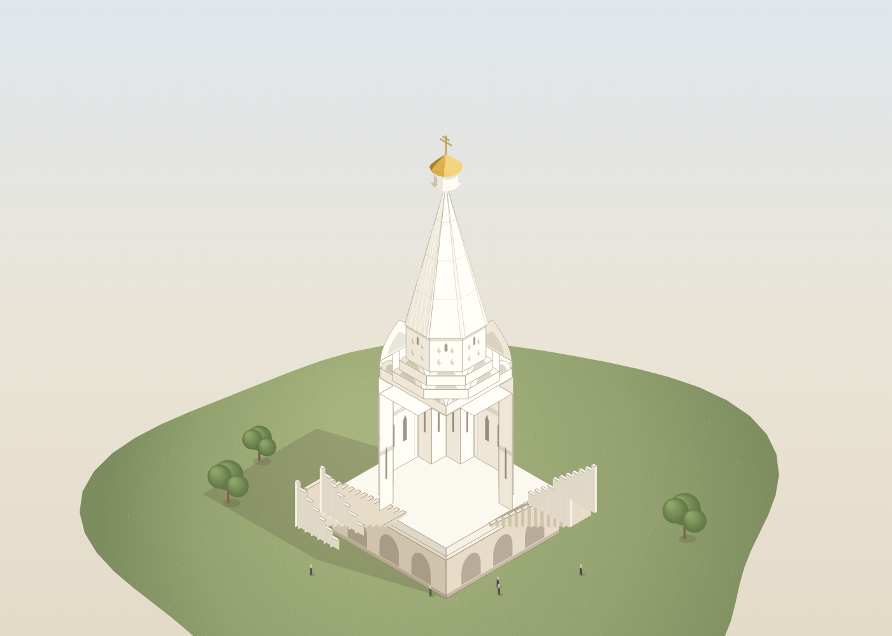
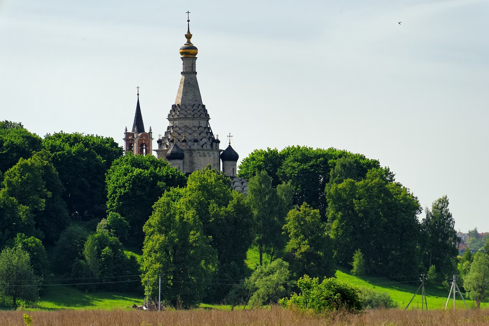
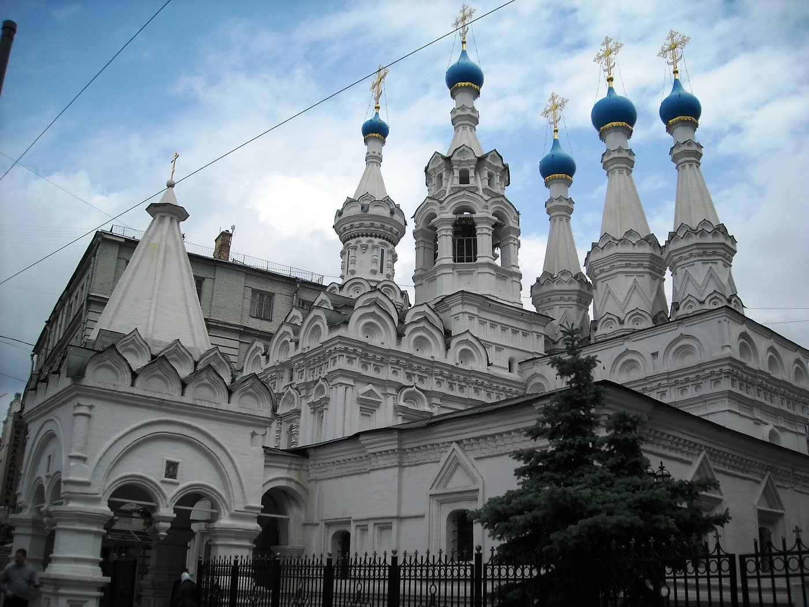
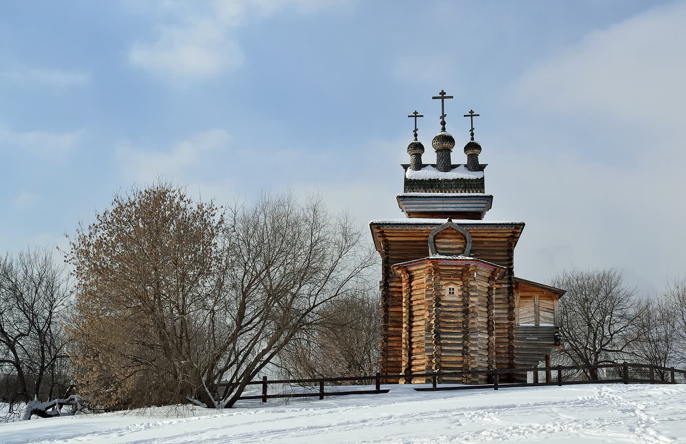

С высокой точки храм читается рядом с берегом, рекой и другими постройками Коломенского; ансамбль — это группа зданий и пространства между ними, воспринимаемые вместе.
Коломенское · 1532 · архитектурное расследование
Как камню приказали взлететь?
Храм невелик внутри, но с берега выглядит белой вспышкой высотой 62 метра. Где именно камень перестаёт казаться тяжёлым? Найди ответ собственными глазами.
Увидеть главное за 3 минуты48 секунд фильма → четыре решения в лаборатории → выводИсследовать самостоятельноНачать с аудиопрогулки; карта всех направлений находится сразу ниже
Карта самостоятельного маршрута

Завершение короткого маршрута: 0 из 2 обязательных действий.
1 из 3 · Фильм · 48 секунд
Храм, который больше самого себя
Снаружи — белая молния над Москвой-рекой. Внутри — небольшая семейная церковь. Как одно здание сумело стать и тем и другим?
Документальные фотографии и образовательная модель; исторические события не инсценируются.Голос синтезирован для рабочей версии · субтитры доступны
Аудиопрогулка · 3:55
Четыре движения взгляда
Единая звуковая дорожка ведёт от берега к кресту. На экране меняются реальные точки наблюдения; подробный текст не мешает смотреть.

Читать расшифровку аудиогида
Отойди так, чтобы увидеть церковь вместе со склоном и небом. Пока не ищи шатёр. Посмотри на землю: высокий берег уже идёт вверх.
Теперь посмотри в стороны. У основания расходится галерея — она словно раскрывает руки и даёт вертикали разбег.
Поднимай глаза ступень за ступенью. Кокошники не дают взгляду удариться о край стены. Каждый следующий объём немного уже предыдущего.
На границе последнего яруса и шатра крыша не начинает новое движение — она принимает уже набранное. Проследи грань до креста, затем опусти взгляд обратно к берегу.
Главное открытие: это не высокая крыша на обычном здании. Вверх работает вся композиция — от земли до креста.
Рабочий голос синтезирован. Перед финальным открытием он будет заменён человеческой записью; содержание и главы уже доступны для проверки.
Смотри, а не читай
Один храм — четыре расстояния
Ландшафт, ансамбль, здание и деталь показаны разными документальными ракурсами.



Все четыре кадра · документальные фотографииЛицензии и авторы · в реестре источников
Три способа смотреть
Что перед тобой: документ или объяснение?
Фотография показывает современный вид. Схема объясняет устройство. След сохранения напоминает: перед нами не застывший XVI век.
Документальная фотография
Фиксирует сегодняшний внешний вид, но сама по себе не объясняет конструкцию и историю изменений.
Проверить происхождение →Перед лабораторией · 20 секунд
Почему эта форма называется шатром?
Сначала узнай её глазами — потом попробуй сам поставить правильное завершение на храм.
Шатёр — высокая многогранная крыша: прямые наклонные грани сходятся к одной вершине.
Название понятно по силуэту: архитектурная форма напоминает шатёр из ткани, натянутый на опоры. Но в Коломенском это не лёгкий навес, а монументальное каменное завершение храма.
Купол округляется.Шатёр взлетает прямыми гранями.
Определение сверено с архитектурным словарём портала «Культура.РФ». Проверить источник →
Теперь ищи не просто высокую крышу. В лаборатории проверь, какое завершение продолжит движение всего здания — от берега до креста.
2 из 3 · Твоя очередь
Сможешь заставить камень взлететь?
Выбери четыре решения и следи за силуэтом. Где он тяжелеет? Где ломается? А где взгляд сам мчится к кресту?
Собери силуэт: каждый выбор остаётся видимым, чтобы его можно было сравнить и осознанно исправить.
Четыре шага — и храм оживёт
1. Дай храму разбег
2. Подхвати движение
3. Не останови взгляд
4. Усиль высоту
Начни с основания. Модель будет меняться после каждого решения.
Состояние модели: выбор ещё не сделан.
Текстовая альтернатива учебной модели
Модель последовательно меняет четыре части: основание, переходные ярусы, завершение и положение в ландшафте. Компактное основание делает силуэт собранным; галерея расширяет его и начинает движение. Один переход создаёт резкий скачок; несколько сужающихся ярусов проводят взгляд плавно. Купол собирает движение вокруг свода, шпиль резко вытягивает одну точку, гранёный шатёр продолжает сужение всего объёма. Высокий берег включает природный склон в общую вертикаль.
Это визуальная гипотеза, а не инженерный расчёт. Финальная комбинация сопоставляется с реальной фотографией памятника.
3 из 3 · Развилка после лаборатории
Коломенское не ставит высокую крышу на обычную коробку: широкое основание, сужающиеся переходы и шатёр передают движение друг другу.
Контраст масштаба
Снаружи — гигант. Внутри — семейный храм
Кажется, за этими стенами должен помещаться целый город. Но здесь молилась княжеская семья.
62метра высоты
Здание поражало не размером зала, а силой образа
Факт Музей-заповедник указывает высоту около 62 метров. Толстые стены несут небольшой домовый храм, а белокаменные детали выделяются на белой штукатурке рядом с красной кирпичной кровлей.
Внутреннее пространство камерное по сравнению с наружным силуэтом. Человек входит не в огромный городской собор: чувство высоты рождается из пропорций, света и движения взгляда.
Домовая церковь для великокняжеской семьи, а не вместительный городской собор: человеческую меру здесь задаёт небольшой зал, а не внешний 62-метровый силуэт.
Как сохраняли памятник
Как храм прошёл через четыре столетия изменений
За белым силуэтом стоят не только заказчик и предполагаемый зодчий, но и поколения исследователей и реставраторов.
Белый силуэт дошёл до нас благодаря людям
Одни измеряли трещины, другие укрепляли кладку, третьи возвращали памятнику утраченные детали. Перед нами не «замороженный XVI век», а подлинное сооружение, которое четыре столетия изучали, меняли и спасали.
Редакционное объяснение по материалам музея-заповедника «Коломенское» и UNESCO. Это не архивная цитата и не вымышленное свидетельство.Храм взлетел: строительство завершили, церковь освятили. Основной каменный объём дошёл до нас, но его поверхности и детали пережили много ремонтов.
Спасали — и меняли: при ремонте Николая Шохина церковь покрыли цементной штукатуркой, переложили свод и заменили части карнизов. Сегодня такой подход сам стал уроком истории реставрации.
У памятника появилось имя защитника: Пётр Барановский возглавил музей в Коломенском, исследовал и реставрировал церковь Вознесения, возвращая разговор от «обновить покрасивее» к научному сохранению.
Сначала доказательства, потом решение: исследования уточнили ранние формы; позднее прошла комплексная реставрация, а иконостас реконструировали по Царским вратам XVI века. Это реконструкция по источнику, не чудом уцелевший интерьер.
История не закончилась: музей продолжает работы по сохранению ансамбля. Современный белый силуэт — не «нетронутый XVI век», а результат почти пяти столетий наблюдения, ошибок и заботы.
Архитектурные тайны
Выбери одну тайну — или открой все шесть
Почему шатёр не падает зрительно? Кто его придумал? Что здесь русского, а что европейского? Первый ли это каменный шатровый храм? Здесь начинается спор, который интереснее готового ответа.
Открыть архитектурное досье: 6 расследований
Россия и мир · условная типологическая схема
Три здания тянутся в небо. Но каждое — по-своему
Нажимай кнопки и накладывай условные контуры. Это сравнение способов строить вертикальный образ, а не обмер, единый масштаб или доказательство заимствования.
Сначала сделай ставку
У какой формы движение вверх начинается ближе всего к земле?
Выбери форму, затем проверь себя наложением контуров.
Наложи контуры
Три формы стоят на одной базовой линии. Смотри, где именно начинается подъём.

Движение собирается вокруг огромного свода. Это сравнение принципа, а не доказательство влияния.

Острота сосредоточена в паре шпилей; вертикаль раздваивается.
Взгляд начинает подъём у земли и проходит через всё здание без резкой остановки.
Шатёр меняет характер
Один принцип — четыре совершенно разных голоса
После 1532 года шатровый принцип раскрывался по-разному: солировал, собирал шумный ансамбль, превращался в каменное кружево и вырастал из дерева. Это типологическое сравнение, а не утверждение, что каждый храм прямо скопировал Коломенское.

Вертикаль больше не солирует. Центральный шатёр дирижирует целым хором башен, глав, красок и маршрутов.

Один шатёр по-прежнему командует силуэтом, но вокруг него теснее собираются главы и кокошники. Сравниваем видимый принцип, не заявляя прямое заимствование.

Сначала рассмотри силуэт. Объяснение ритма откроется после задания.

Тот же порыв вверх — но другим голосом. Брёвна, широкие кровли и высокий деревянный шатёр делают силуэт теплее и суровее.
Смотри как исследователь: это родственники по шатровому принципу, а не четыре копии одного стиля. Прямая цепочка «один храм породил другой» доказана не во всех случаях — мы сравниваем то, что действительно видно: силуэт, ритм и работу шатра.
Найди смену характера
Где одинокая вершина превращается в повторяющийся каменный ритм?
Ищи повтор формы на фотографии. Подпись не выдаёт ответ.
Игра наблюдения
Сломай подъём одним движением
Убери один слой прямо со схемы и сравни силуэт до и после. Что сильнее всего разорвёт передачу движения от широкого основания к шатру?
Выбери слой: изменение произойдёт на схеме рядом.
Проверка открытия
Узнаешь шатровую вертикаль без подсказки?
Три коротких решения. Ответ появляется сразу рядом — искать его внизу страницы не придётся.
С какой точки лучше всего проверить связь здания с берегом?
Какой разрыв сильнее всего посадит шатёр на тяжёлый низ?
Что доказывает сходство четырёх шатровых храмов?
Ответь на три вопроса — и получишь итог маршрута.
Календарь музея
Архитектура на каждый день
Один месяц на экране, 31 отдельный повод. Пустые дни не прячем: календарь будет наполняться принятыми выпусками.
Свободный хвост · вопрос редакции
Не нашли ответа — спросите редакцию
Это обычное письмо, а не чат и не автоматическая подписка. Редакция проверит вопрос по источникам; срок ответа не обещаем.
Письмо не публикуется автоматически. Для новых выпусков доступна только RSS-лента; почтовая и Telegram-подписка пока не подключены.
Завершение на месте или по фотографии
Проведи взглядом три перехода
Найди склон и галерею, затем сужающиеся ярусы и шатёр. Если взгляд проходит их без резкой остановки — ты прочитал замысел здания.
- Встань так, чтобы видеть берег целиком.
- Проведи взгляд от нижней точки склона до креста.
- Назови место, где движение могло бы оборваться.
Семейная миссия · 5 минут
Архитектор просит наблюдателя закрыть ладонью часть отдельной схемы выше или реального вида на месте; фотография здесь остаётся документом без цифровой маски. Затем поменяйтесь ролями.
Открыть отдельную схему игры · Вернуться к карте самостоятельного маршрута ↑
Проверка рассказа
Где факт, а где красивая версия?
Мы не просим верить музею на слово. Здесь можно проверить дату, авторскую гипотезу, научный спор и происхождение фотографии.
Открыть реестр источников, авторов и лицензий
- 01Музей-заповедник «Коломенское» — дата, высота, устройство, русские и западноевропейские элементы, осторожные формулировки авторства и предания.
- 02Культура.РФ / Музей архитектуры — композиция, ренессансные и готические признаки, версия Петрока Малого.
- 03Архитектура Руси XVI века — деревянная традиция и спор Коломенского с Александровской слободой.
- 04Большая российская энциклопедия — место шатровых храмов и готических приёмов в архитектуре XVI века.
- 05Государственный исторический музей — Покровский собор и развитие шатровой композиции.
- 06UNESCO World Heritage Centre — всемирное значение и влияние памятника.
- 07Фотография UNESCO — © UNESCO / Livio Garuccio, CC BY-SA 3.0 IGO, без изменения.
- 08Большая российская энциклопедия: готика — башенные доминанты Кёльнского собора и границы типологического сравнения.
- 09Большая российская энциклопедия: купол — купол Санта-Мария-дель-Фьоре как градостроительная доминанта Возрождения.
- 10Фото общего вида — Alexxx1979, CC BY-SA 4.0; кадрирование для веб и фильма.
- 11Фото ансамбля с Передними воротами — Alexxx1979, CC BY-SA 4.0; кадрирование для веб и фильма.
- 12Нижний ракурс церкви — Alexxx1979, CC BY-SA 4.0; кадрирование для веб и фильма.
- 13Фото архитектурных деталей — Vyacheslav Argenberg, CC BY 4.0; кадрирование для веб.
- 14Санта-Мария-дель-Фьоре — Mariordo, CC BY-SA 4.0; кадрирование и уменьшение для веб.
- 15Кёльнский собор — CEphoto, Uwe Aranas, CC BY-SA 4.0; кадрирование и уменьшение для веб.
- 16Покровский собор — Alexxx1979, CC BY-SA 4.0; кадрирование для веб.
- 17Культурные объекты Московской области — церковь Преображения в Острове, вторая половина XVI века.
- 18Культура.РФ — храм Рождества Богородицы в Путинках, 1649–1652 годы и три декоративных шатра.
- 19Музей-заповедник «Коломенское» — деревянная церковь святого Георгия 1685 года и история её перемещения с Русского Севера.
- 20Церковь Преображения в Острове — Alexxx1979, CC BY-SA 4.0; кадрирование и уменьшение для веб.
- 21Храм Рождества Богородицы в Путинках — Elisa.rolle, CC BY-SA 4.0; кадрирование и уменьшение для веб.
- 22Деревянная церковь святого Георгия — Dmitry Ivanov, CC BY-SA 4.0; кадрирование и уменьшение для веб.
- 23Музей-заповедник «Коломенское»: Пётр Барановский — директор музея с 1923 года и реставратор церкви Вознесения.
- 24Доклад Министерства культуры РФ для UNESCO — история ремонтов, включая работы 1866–1867 годов, исследования XX века и комплексную реставрацию 2003–2007 годов.
- 25Музей-заповедник «Коломенское»: благоустройство и реставрация — работы 2024–2025 годов и статус церкви в программе сохранения.
- 26НИМ РАХ: восточный фасад И. В. Рыльского — документальная обмерная основа для проверки крупных пропорций; цифровая копия не воспроизводится из-за отсутствия открытой лицензии.
- 27НИМ РАХ: восточный фасад Н. А. Шохина — исторический обмер 1860-х годов; публичная анимация музейного скана требует отдельного разрешения.
- 28Условия использования коллекции НИМ РАХ — музейные изображения не копируются и не трассируются без предварительного письменного разрешения.
- 29«Тайны церкви Вознесения» — официальное подтверждение существования обмерных чертежей XIX–XX веков и разрезов Н. А. Шохина.
{kind=link}
{kind=link}
{kind=link}
{kind=link}
{kind=link}
{kind=link}
{kind=link}
{kind=link}
{kind=link}
{kind=link}
Куда дальше
Продолжи открытие тремя способами
Продолжи тему действием, проверяемым источником или встречей с реальным памятником.